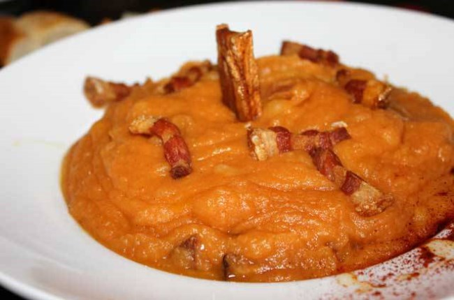

| Autor: Alejandro Rivera Casaseca Fecha:20/01/2021 |
Ávila |
||||||||
| Inicio |
|
||||||||
| Burgos | |||||||||
| León | |||||||||
| Palencia | |||||||||
| Salamanca | |||||||||
| Segovia | |||||||||
| Soria | |||||||||
| Valladolid | |||||||||
| Zamora | |||||||||
| Pagina de contacto | |||||||||
LocalizaciónLocalidadesGrandes ciudades : Ávila, Arévalo, Arenas de San Pedro, Las Navas del Marqués, Candeleda, Sotillo de la Adrada, El Tiemblo, Cebreros, La Adrada, El Barco de Ávila, El Hoyo de Pinares, Piedralaves, Navaluenga, El Barraco, Piedrahíta, Casavieja, Madrigal de las Altas Torres, Burgohondo, Mombeltrán, El Arenal, Lanzahíta, Solosancho, Pedro Bernardo, Tiñosillos, Navalperal de Pinares, Fontiveros, Nava de Arévalo, San Esteban del Valle, Sanchidrián, Mijares, Casillas, Maello, El Fresno, Gavilanes, San Bartolomé de Pinares, La Horcajada, Horcajo de las Torres, Guisando, Crespos y Cuevas del Valle. Mas informaciónGeografíaÁvila está localizada geográficamente en la Meseta Norte de la península ibérica. Se halla situada a 1131 m de altitud, en un promontorio rocoso en la margen derecha del río Adaja —afluente del Duero— y se trata de la capital de provincia más alta de España. Su término municipal abarca 231,9 km², el 3 % de la superficie de la provincia. El término municipal de Ávila —con un perímetro muy irregular— limita al norte con los de Cardeñosa, Mingorría, San Esteban de los Patos, Brieva, Tolbaños, Berrocalejo de Aragona, Mediana de Voltoya y Ojos-Albos, al este con el de Santa María del Cubillo, al sudeste con los de Navalperal de Pinares y Herradón de Pinares, al sur con el de Tornadizos de Ávila, al suroeste con el de Gemuño, al oeste con los de El Fresno, La Colilla, Martiherrero y Marlín y al noroeste con los de Bularros y Monsalupe. El territorio del término municipal está representado en las hojas 506, 531 y 532 del Mapa Topográfico Nacional. Volver al principioHistoriaPrehistoria y romanos Monumento conocido como "Los Cuatro Postes"Restos romanos junto a la Puerta de San Vicente.El nombre de la ciudad viene de los distintos pueblos y tribus que han vivido a lo largo de milenios en la provincia. Los primeros fueron los vetones, que la llamaron Óbila (monte alto), siendo uno de los castros más importantes de esta tribu, junto con Sanchorreja, Berrueco, Mesa de Miranda, Las Cogotas, El Raso y Ulaca. Los vetones dejaron vestigios por toda la geografía de la provincia de Ávila, especialmente en forma de verracos. Más tarde la poblaron los romanos, dándole el nombre de Abila o Abela. Los romanos dejaron también su marca en la ciudad, que consistía por entonces en el actual casco viejo, la parte rodeada por las murallas. Calzadas, mosaicos o la plaza del Mercado Grande, o El Grande, son parte de los vestigios romanos que quedan. El interior de la ciudad aún mantiene el trazado típico de las ciudades romanas tipo hiberna (castros estables), de contorno rectangular, con dos calles principales (cardo y decumano) que se cortan ortogonalmente en el centro donde estaba el foro. Actualmente este trazado aparece sólo parcialmente modificado, reconociéndose fácilmente antiguas entradas romanas en las puertas de San Vicente y Gonzalo Dávila, donde los cubos defensivos originales fueron conglobados en la muralla medieval. También se mantienen las manzanas cuadrilongas recuerdo de las insulae romanas. El Cardo máximo corresponde a la actual Calle de Vallespín; mientras que el Decumano máximo lo constituirían la Calle de los Caballeros y la Calle de Bracamonte. Todas ellas confluyen en el «Mercado Chico» que fue el antiguo foro. Por su parte, la necrópolis romana estaba al este, más allá de la Calle de San Segundo, de modo que en toda esa parte de la muralla se pueden observar piezas funerarias reaprovechadas como materiales de construcción: estelas, aras, cipos, «verraquitos» y cápsulas cinerarias de granito, incrustados en los lienzos del muro oriental. Aparte de los restos arquitectónicos, hay numerosos restos cerámicos, monedas y otros objetos arqueológicos representativos de la vida cotidiana en la Antigüedad. VisigodosLos primeros asentamientos visigodos en la península se consideraban geográficamente muy cerrados. Según Palol y sus estudios, los asentamientos visigodos en España comprenden las ciudades de Burgos, Soria, Guadalajara, Toledo, Ávila, Cáceres, Madrid y Palencia, lo que induce a pensar que la elección de estos asentamientos es estratégica. Aunque su ubicación concreta no está determinado en la ciudad de Ávila se sabe que fue una de las plazas fuertes de la época visigoda. Durante los siglos VI y VII no hubo conflictos en la ciudad. Los visigodos utilizaban la tierra para cultivos de cereal y ganadería, según las pizarras encontradas sobre todo en el municipio de Diego Álvaro. La importancia de Ávila en este periodo se debe a un carácter religioso según la documentación que detalla la intervención de los prelados de Abela en los concilios toledanos. ArqueologíaCorrobora el devenir visigodo en Ávila el templo de Santa María de la Antigua. Las crónicas registran que este monasterio fue fundado antes del año 687, siendo monasterio mixto (para ambos sexos) hasta la llegada de los árabes. Su importancia era tal que se cita como el lugar donde murió Santa Leocadia, hija del Rey Wamba. En esta iglesia estaría enterrado también el duque Severiano, un noble visigodo. Edad Media Invasión musulmanaNo se puede precisar por falta de datos las circunstancias y vicisitudes durante la etapa de dominación musulmana ni tampoco concretar la relación social, económica, cultural, política y religiosa que pudieran tener esta creencia en Ávila. Lo único que parece seguro es que durante los primeros años de la invasión musulmana la ciudad se convirtió en un punto estratégico, siempre deseada por árabes y cristianos como enclave defensivo, y los enfrentamientos por su posesión fueron permanentes. Hubo incursiones de los reyes cristianos en la ciudad después de la ocupación musulmana pero no llegaron a asentarse. Alfonso I y su hijo Fruela llevaron a cabo varias expediciones llegando a entrar en la ciudad (740-742) sin ánimo de permanecer, más bien con intención de destruir las defensas, recaudar botín y a la vez, aprovechando que los pobladores cristianos de la ciudad seguían al rey en su repliegue, obtenían pobladores para las tierras ocupadas y guerreros para la defensa de los reinos cristianos. Tras estas incursiones, se suceden en Ávila tres siglos de los que se conocen pocos aconteceres. Ávila, como otras poblaciones de la meseta, debido a que queda en tierra de nadie, sujeta a las sucesivas expediciones de unos y otros, con la consiguiente destrucción de campos y poblaciones, quedó prácticamente despoblada. Desde el siglo VIII estas zonas o ciudades pueden considerarse dentro del llamado "desierto estratégico" en el que hubo un fuerte despoblamiento, convirtiéndose a su vez en tierra de nadie y siendo escenario de las correrías de ambas fuerzas. ReconquistaFlanco noroeste de las Murallas de Ávila. En el siglo XI Don Raimundo de Borgoña, yerno de Alfonso VI de Castilla fue el encargado de la repoblación del centro de la península, y con el fin de proteger Toledo surgen las ciudades amuralladas de Salamanca, Ávila y Segovia. Más tarde la repoblación de la península se va llevando más al sur dejando a Ávila en un segundo plano casi sin relevancia en la época, aunque envía procuradores a las Cortes castellanas. En la baja Edad Media (siglo XV y XVI) la ciudad vuelve a renacer gracias a las idas y venidas de la corte. La ciudad y la provincia prosperaron enormemente y fueron el lugar de nacimiento de numerosos personajes religiosos, escritores y consejeros espirituales como Santa Teresa de Cepeda y Ahumada en la capital y San Juan de la Cruz en la provincia (Fontiveros). Guerras Civiles castellanasDurante la guerra civil castellana fue sede de los partidarios del infante Alonso. Su concejo fue uno de los principales organizadores de la Guerra de las Comunidades y en ella se formó la primera junta de los comuneros. A partir del siglo XVII la ciudad empieza una larga decadencia y una despoblación que la dejó con apenas 4.000 habitantes, empezando una lenta recuperación en el siglo XIX, con la construcción del ferrocarril. El siglo XXEl proceso de desarrollo e intensa urbanización que se inicia en el siglo XX han conducido a la ciudad a un segundo plano de la realidad española. Las primeras décadas del siglo han mostrado asimismo un cierta tendencia de la ciudad a preservar sus tradiciones frente a los cambios sociales que se habrían de producir necesariamente en todo el país. En 1936 tras el estallido la Guerra Civil, la ciudad enseguida pasa a formar parte de la zona ocupada por las tropas sublevadas, no produciéndose acontecimientos históricos de relevancia. Durante la dictadura franquista se intensifica el proceso de despoblación de la provincia que ha de afectar necesariamente a la ciudad. Tras la Guerra Civil la participación de Ávila en la sociedad española se restringe a pocas acciones, siendo quizá la de más relevancia, pero no por ella la más conocida, la aportación o el apoyo para el lanzamiento de políticos. Ya en el siglo XIX Mariano José de Larra obtuvo un escaño en las Cortes al presentarse por Ávila. Del mismo modo Adolfo Suárez (presidente español durante la Transición y primer presidente de la democracia posterior al Franquismo) realizó parte de su carrera política desde Ávila (nació en el pueblo de Cebreros); en la década siguiente José María Aznar (presidente entre 1996 y 2004) salió elegido diputado en las Cortes por Ávila, pese a no ser abulense. Se puede citar a otros ministros que han comenzado su andadura política desde esta ciudad como Agustín Rodríguez Sahagún, Agustín Díaz de Mera, o Ángel Acebes. Sin embargo estas aportaciones no reflejan en absoluto la influencia real de la ciudad o la provincia en la política española, que es muy inferior a la relevancia de estas personas. Volver al principioCulturaEn Ávila hay muchas actividades culturales para hacer, como visitar monumentos, iglesias, sus numerosos municipios, mencionados antes, etc. En el siguiente enlace, podrá encontrar todas las actividades culturales que podrá realizar en su visita a Ávila. Actividades culturales de Ávila Volver al principio NaturalezaEstos son los 10 mejores parajes naturales de la provincia de Ávila: Parque Regional de la Sierra de Gredos, Cuevas del Águila, Calzada Romana Puerto del Pico, El castañar de El Tiemblo, Piscinas Naturales de Navaluenga, Circo de Gredos, Piscinas Naturales Arenas de San Pedro, Piscinas Naturales Candeleda, Ruta Valdeascas, Hípica San Joaquín Si desea conocer más sobre estos parajes, o sobre otros que no se han mencionado, puede acceder a ellos a través de estos enlaces: Información sobre parajes mencionados y otros que no Volver al principioTradicionesBailes tradicionales como las danzas del paloteo, mascaradas de Las Toras, Cucurrumachos, Harramachos, Machurreros y Zarramaches, las luminarias, los ritos de inicio, los vítores, las ofrendas de ánimas, los mayos, las hogueras de quintos, las calbotadas, antiguas tradiciones, algunas casi olvidadas encuentran ahora en Mascarávila la oportunidad de trasmitirse y difundirse como parte del folklore de Ávila. Este es un vídeo de una de las fiestas de un municipio de Ávila: Volver al principio OtrosGastronomíaLa gastronomía del valle Amblés y Sierra de Ávila destaca por sus asados, como la ternera de carne de Avileño, el famoso chuletón de Ávila, el cabrito, o el cochinillo. Aunque también son muy apreciados los dulces típicos, como las famosas Yemas de Ávila, las rosquillas o los huesillos. La siguiente imagen es un ejemplo de gastronomía de la provincia de Ávila, son las patatas revolconas Volver al principio |